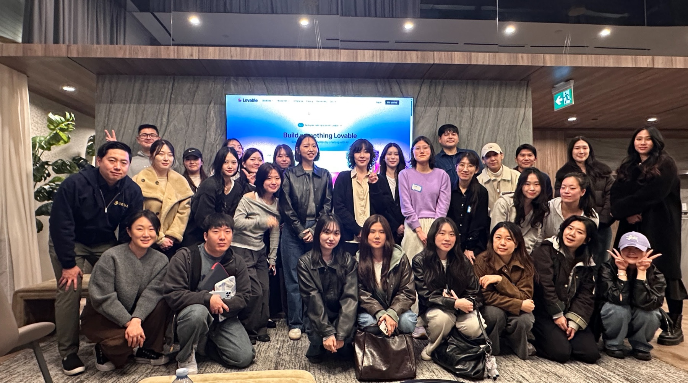
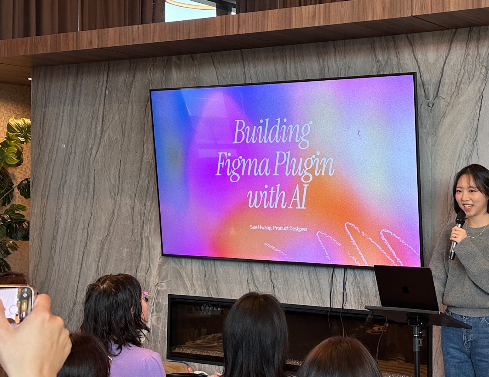
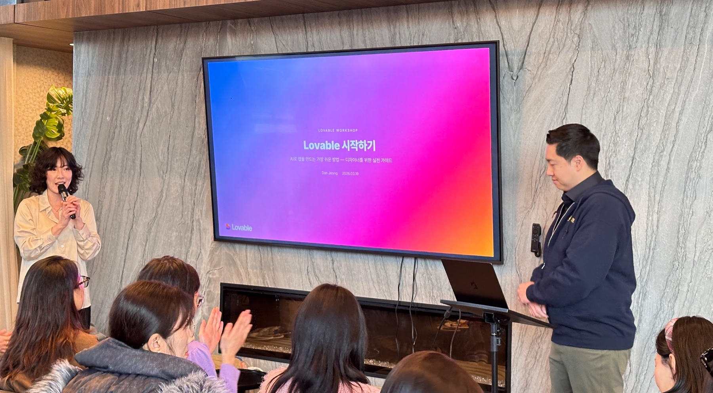
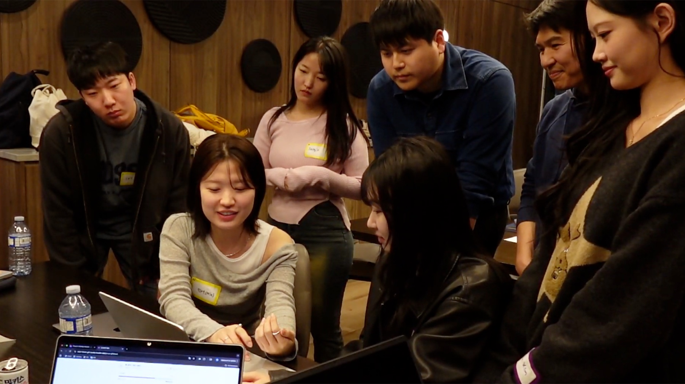

AIAI & Design · Lovable mini hackathon · Burnaby · Mar 2026
AI & Design: New Workflows with Lovable — An AI Hackathon & Meetup for Designers
On March 22, I co-hosted a sold-out, Korean-language AI workshop and mini hackathon for 40 designers in Metro Vancouver. We combined practitioner talks, a live Lovable workshop, and a 90-minute team build. By the end, first-time users were presenting working apps.

A room for designers to build, not just listen
AI had become impossible to ignore, but a familiar gap kept showing up in conversations with designers around us. Everyone had heard about vibe coding. Far fewer had found a place to try it from a designer's point of view.
Most AI events were built around engineering. So Eun Ahn and I wanted to create a Korean-language event where designers could see real workflows, try a tool without pretending to be experts, and leave with something they had built themselves.
Registration filled up, even after we opened a few extra spots. The official event page listed 40 attendees from UX, product, graphic, brand, and motion design across Metro Vancouver. As a co-host, I helped shape the workshop flow, facilitate the teams, and move the room from listening to building and sharing.
| Format | Practitioner talks, live Lovable workshop, 90-minute team build, demos, finalist pitches, and awards |
| Teams | Randomly formed groups of three designers |
| Contributors | So Eun Ahn; Dan Jeong, Lovable Ambassador; Sue Hwang, Product Designer |
| Partners | KDNEW, Lovable, and Canbu |
We designed the day as one continuous build
We did not open a blank prompt box and tell everyone to start. The first half of the event made three parts of an AI-enabled design workflow visible.
So Eun shared how designers can use Git and a shared codebase to collaborate more closely with engineers and with one another. Sue Hwang walked through how she built a Figma plugin with Claude and Codex, step by step, as a designer. Dan Jeong then moved from explanation to a live Lovable build, showing how a prompt becomes an editable product flow.
Each participant received 100 Lovable credits in advance. Then we formed random teams of three and gave them 90 minutes to choose a problem, define one core experience, and make it work well enough to share. The sessions were not separate lectures before a hackathon. They were the setup for the build.


Ninety minutes later, the ideas were working
Crystal Park and Leiah Choi won the mini hackathon with Sircle, a dating service for seniors. Instead of starting with faster matching, they started with a more useful question: how can an older adult know that a new connection is safe and trustworthy?
Another team built an English-learning app for newcomers that paired practical phrases with Canadian cultural context. Other teams created a community meal-prep platform and an affirmation app that kept social media locked until the user spoke the phrase correctly.
None of these were finished products. That was not the point. Each team had enough of a working experience to explain the user, the problem, and the core interaction, then see where the idea held up and where it did not.

What the room felt like
At the beginning, people stayed close to their own laptops. Halfway through, they were standing behind other teams, comparing flows, fixing prompts, and explaining what had worked. The room felt less like a class and more like a temporary product studio.
The small operational details mattered too. Participants later mentioned the venue, pacing, food, snacks, and coffee as part of what helped them stay comfortable and focused. A useful workshop is not only the content on the screen. It is the structure and care that let people participate without worrying about whether they belong in the room.
That became one of the clearest signs that the event worked. A job seeker who had worried about keeping up with working professionals could follow the build. People who had never used Lovable made functional prototypes. Experienced designers openly shared how they were using AI in real work.
What participants took away
The reviews pointed to more than excitement about a new tool. People valued seeing real workflows, building under a clear time limit, and learning from others with different levels of experience.
Mia Choi (최민서)
I was worried that, as a job seeker, I might not be able to keep up with the working professionals in the room. The clear explanations and credits provided in advance helped me follow along. Experiencing the path from the talks to building directly in Lovable made it incredibly valuable.
Glenn H
The program made practical experience possible in a short time. Watching people collaborate under pressure and build a working app with AI in only an hour made me feel that “the future is already here.” It also reinforced that business value comes from combining AI with each person’s experience and domain knowledge.
Suhyun Kim
It was especially interesting to see how working designers use AI and what they actually produce. It was more than a hackathon: the sessions where So Eun, Sue, and Dan shared their approaches and experience added much deeper insight. The whole event felt polished and immediately useful in practice.
What I took away as a co-host
AI changed the speed of the work. In 90 minutes, people with little or no Lovable experience moved from an idea to something functional. But the clearest products did not come from the cleverest prompts. They came from teams that had a specific person, a real tension, and one interaction worth testing.
AI shortened the distance from idea to prototype. It did not choose the problem worth solving.
The event worked because people completed the whole loop: see a workflow, choose a problem, build with others, and share unfinished work. They did not leave as AI experts. They left knowing they could start, and with a clearer sense of where their judgment still mattered.
That is the kind of AI event I want to keep helping create: practical enough to try now, structured enough to learn from, and open enough for people to build in public.